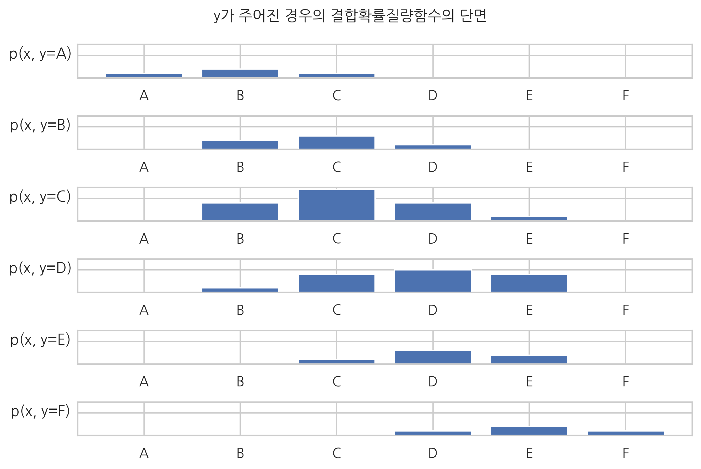
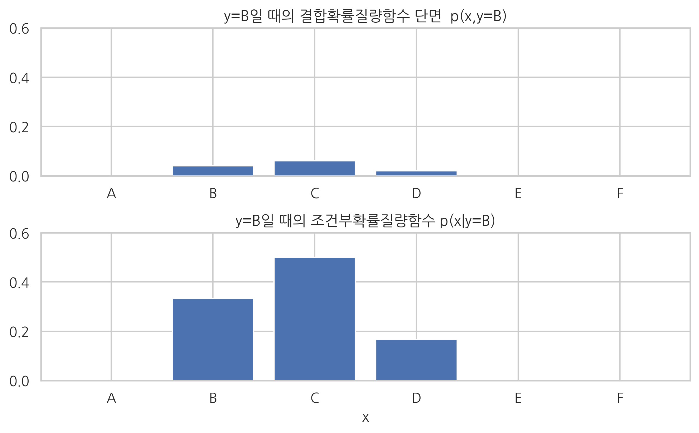

grades = ["A", "B", "C", "D", "E", "F"]
scores = pd.DataFrame(
[[1, 2, 1, 0, 0, 0],
[0, 2, 3, 1, 0, 0],
[0, 4, 7, 4, 1, 0],
[0, 1, 4, 5, 4, 0],
[0, 0, 1, 3, 2, 0],
[0, 0, 0, 1, 2, 1]],
columns=grades, index=grades)
scores.index.name = "Y"
scores.columns.name = "X"
scores
| X | A | B | C | D | E | F |
|---|---|---|---|---|---|---|
| Y | ||||||
| A | 1 | 2 | 1 | 0 | 0 | 0 |
| B | 0 | 2 | 3 | 1 | 0 | 0 |
| C | 0 | 4 | 7 | 4 | 1 | 0 |
| D | 0 | 1 | 4 | 5 | 4 | 0 |
| E | 0 | 0 | 1 | 3 | 2 | 0 |
| F | 0 | 0 | 0 | 1 | 2 | 1 |
pmf = scores / scores.values.sum()
pmf
| X | A | B | C | D | E | F |
|---|---|---|---|---|---|---|
| Y | ||||||
| A | 0.02 | 0.04 | 0.02 | 0.00 | 0.00 | 0.00 |
| B | 0.00 | 0.04 | 0.06 | 0.02 | 0.00 | 0.00 |
| C | 0.00 | 0.08 | 0.14 | 0.08 | 0.02 | 0.00 |
| D | 0.00 | 0.02 | 0.08 | 0.10 | 0.08 | 0.00 |
| E | 0.00 | 0.00 | 0.02 | 0.06 | 0.04 | 0.00 |
| F | 0.00 | 0.00 | 0.00 | 0.02 | 0.04 | 0.02 |
sns.heatmap(pmf, cmap=mpl.cm.bone_r, annot=True,
xticklabels=['A', 'B', 'C', 'D', 'E', 'F'],
yticklabels=['A', 'B', 'C', 'D', 'E', 'F'])
plt.title("결합확률질량함수 p(x,y)")
plt.tight_layout()
plt.show()

pmf_marginal_x = pmf.sum(axis=0)
pmf_marginal_x
X
A 0.02
B 0.18
C 0.32
D 0.28
E 0.18
F 0.02
dtype: float64
pmf_marginal_y = pmf.sum(axis=1)
pmf_marginal_y[:, np.newaxis]
array([[0.08],
[0.12],
[0.32],
[0.28],
[0.12],
[0.08]])
import string
x = np.arange(6)
for i, y in enumerate(string.ascii_uppercase[:6]):
ax = plt.subplot(6, 1, i + 1)
ax.tick_params(labelleft=False)
plt.bar(x, pmf.iloc[i, :])
plt.ylabel("p(x, y={})".format(y), rotation=0, labelpad=30)
plt.ylim(0, 0.15)
plt.xticks(range(6), ['A', 'B', 'C', 'D', 'E', 'F'])
plt.suptitle("y가 주어진 경우의 결합확률질량함수의 단면", y=1.05)
plt.tight_layout()
plt.show()

pmf.iloc[0, :]
X
A 0.02
B 0.04
C 0.02
D 0.00
E 0.00
F 0.00
Name: A, dtype: float64
np.sum(pmf.iloc[0, :])
0.08
cond_y0 = pmf.iloc[0, :]/pmf_marginal_y[0]
cond_y0
X
A 0.25
B 0.50
C 0.25
D 0.00
E 0.00
F 0.00
Name: A, dtype: float64
np.sum(cond_y0)
1.0
plt.subplot(211)
plt.bar(x, pmf.iloc[0, :])
plt.ylim(0, 0.5)
plt.xticks(range(6), ['A', 'B', 'C', 'D', 'E', 'F'])
plt.title("y=A일 때의 결합확률질량함수 단면 p(x,y=A)")
plt.subplot(212)
plt.bar(x, cond_y0)
plt.ylim(0, 0.5)
plt.xticks(range(6), ['A', 'B', 'C', 'D', 'E', 'F'])
plt.title("y=A일 때의 조건부확률질량함수 p(x|y=A)")
plt.xlabel("x")
plt.tight_layout()
plt.show()

pmf.iloc[1, :]
X
A 0.00
B 0.04
C 0.06
D 0.02
E 0.00
F 0.00
Name: B, dtype: float64
np.sum(pmf.iloc[1, :])
0.12000000000000001
cond_y1 = pmf.iloc[1, :]/pmf_marginal_y[1]
cond_y1
X
A 0.000000
B 0.333333
C 0.500000
D 0.166667
E 0.000000
F 0.000000
Name: B, dtype: float64
np.sum(cond_y1)
0.9999999999999999
y = np.arange(6)
plt.subplot(211)
plt.bar(y, pmf.iloc[1, :])
plt.ylim(0, 0.6)
plt.xticks(range(6), ['A', 'B', 'C', 'D', 'E', 'F'])
plt.title("y=B일 때의 결합확률질량함수 단면 p(x,y=B)")
plt.subplot(212)
plt.bar(y, cond_y1)
plt.ylim(0, 0.6)
plt.xticks(range(6), ['A', 'B', 'C', 'D', 'E', 'F'])
plt.title("y=B일 때의 조건부확률질량함수 p(x|y=B)")
plt.xlabel("x")
plt.tight_layout()
plt.show()

mu = [70, 170]
cov = [[150, 140], [140, 300]]
rv = sp.stats.multivariate_normal(mu, cov)
xx = np.linspace(20, 120, 100)
yy = np.linspace(100, 250, 100)
XX, YY = np.meshgrid(xx, yy)
ZZ = rv.pdf(np.dstack([XX, YY]))
plt.contour(XX, YY, ZZ)
plt.xlabel("x")
plt.ylabel("y")
plt.title("결합확률밀도함수 p(x,y)")
plt.show()

from matplotlib.ticker import NullFormatter
from matplotlib import transforms
from scipy.integrate import simps # 심슨법칙(Simpson's rule)을 사용한 적분 계산
xx = np.linspace(20, 120, 100)
yy = np.linspace(100, 250, 100)
XX, YY = np.meshgrid(xx, yy)
ZZ = rv.pdf(np.dstack([XX, YY]))
fx = [simps(Z, yy) for Z in ZZ.T]
fy = [simps(Z, xx) for Z in ZZ]
plt.figure(figsize=(6, 6))
left, width = 0.1, 0.65
bottom, height = 0.1, 0.65
bottom_h = left_h = left + width + 0.05
rect1 = [left, bottom, width, height]
rect2 = [left, bottom_h, width, 0.2]
rect3 = [left_h, bottom, 0.2, height]
ax1 = plt.axes(rect1)
ax2 = plt.axes(rect2)
ax3 = plt.axes(rect3)
ax2.xaxis.set_major_formatter(NullFormatter())
ax3.yaxis.set_major_formatter(NullFormatter())
ax1.contour(XX, YY, ZZ)
ax1.set_title("결합확률분포함수 $p_{XY}(x, y)$")
ax1.set_xlabel("x")
ax1.set_ylabel("y")
ax2.plot(xx, fx)
ax2.set_title("주변확률분포함수 $p_X(x)$")
base = ax3.transData
rot = transforms.Affine2D().rotate_deg(-90)
plt.plot(-yy, fy, transform=rot + base)
plt.title("주변확률분포함수 $p_Y(y)$")
ax1.set_xlim(38, 102)
ax1.set_ylim(120, 220)
ax2.set_xlim(38, 102)
ax3.set_xlim(0, 0.025)
ax3.set_ylim(120, 220)
plt.show()

from matplotlib.collections import PolyCollection
from matplotlib import colors as mcolors
xx = np.linspace(20, 120, 100)
yy = np.linspace(100, 250, 16)
XX, YY = np.meshgrid(xx, yy)
ZZ = rv.pdf(np.dstack([XX, YY]))
fig = plt.figure(dpi=150)
ax = fig.gca(projection='3d')
xs = np.hstack([0, xx, 0])
zs = np.zeros_like(xs)
verts = []
for i, y in enumerate(yy):
zs[1:-1] = ZZ[i]
verts.append(list(zip(xx, zs)))
poly = PolyCollection(verts)
poly.set_alpha(0.5)
ax.add_collection3d(poly, zs=yy, zdir='y')
ax.set_xlabel('x')
ax.set_ylabel('y')
ax.set_xlim(20, 120)
ax.set_ylim(100, 250)
ax.set_zlim3d(0, 0.0007)
ax.view_init(50, -50)
plt.title("결합확률밀도함수의 단면")
plt.show()

for i, j in enumerate(range(9, 3, -1)):
ax = plt.subplot(6, 1, i + 1)
ax.tick_params(labelleft=False)
plt.plot(xx, ZZ[j, :])
plt.ylim(0, 0.0012)
if i < 5:
ax.xaxis.set_ticklabels([])
plt.ylabel("p(x, y={:.0f})".format(yy[j]), rotation=0, labelpad=40)
plt.xlabel("x")
plt.tight_layout()
plt.suptitle("결합확률밀도함수의 단면", y=1.05)
plt.show()

from scipy.integrate import simps # 심슨법칙(Simpson's rule)을 사용한 적분 계산
mag = 10 # 확대 비율
xx = np.linspace(20, 120, 100)
yy = np.linspace(100, 250, 16)
XX, YY = np.meshgrid(xx, yy)
ZZ = rv.pdf(np.dstack([XX, YY]))
plt.figure(figsize=(8, 6))
for i, j in enumerate(range(9, 4, -1)):
ax = plt.subplot(5, 1, i + 1)
ax.tick_params(labelleft=False)
plt.plot(xx, ZZ[j, :] * mag, 'r--', lw=2, label="결합확률밀도함수의 단면")
marginal = simps(ZZ[j, :], xx)
plt.plot(xx, ZZ[j, :] / marginal, 'b-', lw=2, label="조건부확률밀도함수")
plt.ylim(0, 0.05)
ax.xaxis.set_ticklabels([])
plt.ylabel("p(x, y={:.0f})".format(yy[j]), rotation=0, labelpad=40)
if i == 0:
plt.legend(loc=2)
plt.xlabel("x")
plt.tight_layout()
plt.show()

pmf1 = np.array([[1, 2, 4, 2, 1],
[2, 4, 8, 4, 2],
[4, 8, 16, 8, 4],
[2, 4, 8, 4, 2],
[1, 2, 4, 2, 1]])
pmf1 = pmf1/pmf1.sum()
pmf1_marginal_x = np.round(pmf1.sum(axis=0), 2)
pmf1_marginal_y = np.round(pmf1.sum(axis=1), 2)
pmf1x = pmf1_marginal_x * pmf1_marginal_y[:, np.newaxis]
plt.subplot(121)
sns.heatmap(pmf1, cmap=mpl.cm.bone_r, annot=True, square=True, linewidth=1, linecolor="k",
cbar=False, xticklabels=pmf1_marginal_x, yticklabels=pmf1_marginal_y)
plt.title("독립인 두 확률변수의 결합확률질량함수")
plt.subplot(122)
pmf1x = pmf1_marginal_x * pmf1_marginal_y[:, np.newaxis]
sns.heatmap(pmf1x, cmap=mpl.cm.bone_r, annot=True, square=True, linewidth=1, linecolor="k",
cbar=False, xticklabels=pmf1_marginal_x, yticklabels=pmf1_marginal_y)
plt.title("두 확률변수의 주변확률질량함수의 곱")
plt.show()

cond_x_y0 = pmf1[0, :]/pmf1_marginal_y[0]
cond_x_y0
array([0.1, 0.2, 0.4, 0.2, 0.1])
cond_x_y1 = pmf1[1, :]/pmf1_marginal_y[1]
cond_x_y1
array([0.1, 0.2, 0.4, 0.2, 0.1])
pmf2 = np.array([[0, 0, 0, 5, 5],
[0, 5, 5, 5, 5],
[0, 5, 30, 5, 0],
[5, 5, 5, 5, 0],
[5, 5, 0, 0, 0]])
pmf2 = pmf2/pmf2.sum()
pmf2_marginal_x = np.round(pmf2.sum(axis=0), 2)
pmf2_marginal_y = np.round(pmf2.sum(axis=1), 2)
plt.subplot(121)
sns.heatmap(pmf2, cmap=mpl.cm.bone_r, annot=True, square=True, linewidth=1, linecolor="k",
cbar=False, xticklabels=pmf2_marginal_x, yticklabels=pmf2_marginal_y)
plt.title("상관관계인 두 확률변수의 결합확률질량함수")
plt.subplot(122)
pmf2x = pmf2_marginal_x * pmf2_marginal_y[:, np.newaxis]
sns.heatmap(pmf2x, cmap=mpl.cm.bone_r, annot=True, square=True, linewidth=1, linecolor="k",
cbar=False, xticklabels=pmf2_marginal_x, yticklabels=pmf2_marginal_y)
plt.title("두 확률변수의 주변확률질량함수의 곱")
plt.show()

cond_x_y0 = pmf2[0, :]/pmf2_marginal_y[0]
cond_x_y0
array([0. , 0. , 0. , 0.5, 0.5])
cond_x_y1 = pmf2[1, :]/pmf2_marginal_y[1]
cond_x_y1
array([0. , 0.25, 0.25, 0.25, 0.25])